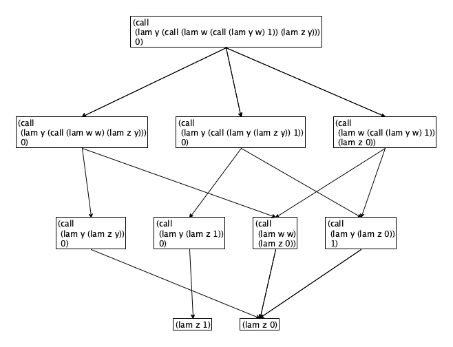
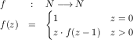
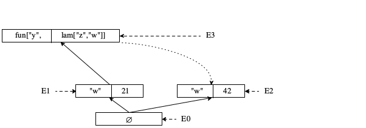

4 First-Class Functions
If you are a student reading this text, you are likely to have encouuntered the idea of “first class” functions, which do not show up in your ordinary algebra course.But if you took calculus courses and paid close attention, you might have noticed your teacher sneaking them in right below your eyes. .The phrase “first class” means that a function can consume functions, return functions, place functions in data structures (say arrays, hash maps, or lists). In short, functions are values just like numbers, characters, strings, etc.
While almost any widely-used, contemporary programming language comes with first-class functions, the designers of mainstream programming languages embraced little more than the algebra-based idea of programming for four decades. It was programming language researchers who started exploring functions as values by 1960. Theoretically inclined researchers pointed to Church’s lambda calculus as a motivation; practical designers ones recognized the expressive power of first-class functions.
Intuitively, adding such powers to “algebra” seems to suggest great gains and On one hand, the uniformity of treating functions as regular values lowers the syntactic complexity of a language and reduces the number of transition rules in the CEK machine. This kind of simplification is what researchers imply with “uniformity.” On the other hand, these simplifications hide that, for example, it is no longer possible to combine the environment and the control stack into a single stack-like data structure. Dynamically allocating and managing the environment becomes mandatory.
This chapter presents these trade-offs. It starts with two section that simplify the syntax of the Algebra language and show that nothing is lost. The third section investigates the revision of the CEK machine, both in terms of its simplified transition rules and the increased complexity of environments. The section on theorems introduces the most widely investigated form of theorems in programming languages: type soundness.
4.1 First-Class Functions
fun["f","z",add[x,9]]
let["z",call["f",1]]
struct lam [parameter,body]
lam["z",add["z",9]]
let["f",lam["z",add["z",9]]]
call[ call[lam["f","f"],lam["z",add["z",9]]] 1]
block[fun["f","z",add["z",9]],call["f",1]]
e = n | add[e,e] | mul[e,e] | |
x | call[e,e] | lam[x,e] |
x = Name |
n = Number |
Scope Whenever you approach a new programming language, it is imperative
to understand the scoping rules. As the preceding chapter explains, every
definition of some name—
lam[x,e] defines x and its scope is e except for all nested lam trees that define the same name.
Substitution Explains It All The programming language AST-lambda generalizes AST-algebra and its function-call mechanism. While the extended language still uses call-by-value to invoke functions, the notion of value has changed and so has the shape of function calls. So, explaining its meaning requires two steps.
current state
next state
call[lam[x,e],v]
e [x <- v]
beta value
add[k,l]
n
n = k + l
mul[k,l]
n
n = k * l
Substitution Is Hard The This problem would also be present
for the AST-algebra language, if it came with calculation rules like
those presented here. description of the semantics glosses over the details of
substitution. While the basics of substitution are straightforward—
call[ lam[y call[ lam[w call[lam["y","w"],1]] lam["z","y"]]] 0]
Figure-ref{fig:lc-homework} shows the resulting graph of possibilities if variable substitution is insensitive to scope. The bottom of the figure shows two distinct results: lam["z",1] and lam["z",0]. It is impossible for both of them to be the correct answer.
Stop! Which one is the correct answer?

Figure 27: An Arithmetic expression and the possible ways of arriving at an answer
A close look at the graph reveals that the middle reduction breaks a part of the substitution rule. By blithely replacing "w" with lam["z","y"] the "y" in this second term is moved from the scope of the outermost lam["y",{--}] to the innermost one lam["y",{--}]. The scoping rule explicitly states, however, that the scope of a lam variable does not include nested lam expressions that define the same name.
substitution as the process of replacing all occurrences of a variable x with a value v in its scope within e.
Generally speaking, substitution is an intuitive procedure that people can usually manage with small examples. That is, they can calculate out the result of small program fragments or at least use substtitution-based thinking to predict the behavior up to free variables. In this sense, substitution explains the meaning of the AST-lambda language. But, it is a complex procedure and injecting it as a single step into the description of the semantics demands a large leap. Furthermore, as already discussed, the substitution procedure traverses the abstract syntax tree in the same as any abstract state machine that determines the result in a deterministic manner. Hence, this book presents the true semantics of AST-lambda via a CEK machine.
block[let[x,e1],e2]
call[lam[x,e2],e1]
The idea of creating a lam function and to apply it immediately has several other uses. In a language without modules, for example, it can be used to create a scope for a set of definitions, to return only some of the defined values, and to rebind them to the same names. This has the effect of hiding some of the definitions inside the lam function’s scope.
Recently, the trick has become popular in other languages. In the JavaScript community, it is considered a pattern and has the name immediately invoked functions.
current state
next state
call[lam[x,e1],e2]
e1 [x <- e2]
beta
Exercises The following exercises aim to deepen your understanding of the syntax and substitution semantics of AST-lambda.
function (z) return z + 9 |
(lambda z (+ z 9)) |
fun z -> z + 9 |
\z -> z + 9 |
(z) -> z + 9 |
Design a concrete JSON syntax for AST-lambda and then implement a parser that maps the concrete syntax into the abstract syntax.
Exercise 48. Develop a grammar that describes the possible contexts in which the transitions for AST-lambda may be applied. Take a look at AST-arithmetic-C in A State Machine for Arithmetic: Non-Determinism for the grammar of contexts for AST-arithmetic.
call[call[lam["f","f"],lam["z",add["z",9]]],1]
4.2 What is Recursion
The preceding section makes no mention of recursion, which might worry you.
After all, Algebra, Your Second Programming
Language heavily invests in a separate explanation of
recursive functions. It turns out that AST-lambda already supports
recursion—
Problem 6 Solve the following equation:
-2 * x = x2 + 1
Problem 7 Solve the following equation:
f(x) = f′(x)
where f′ is the derivative function of f.
Looking for entire functions as solutions to equations sounds difficult. But, recursive functions in programming languages are most easily understood as such equations. And, one way to understand their workings is to think of programming languages as equation solvers.
Consider this simple recursion functions, formulated in mathematical notation:

block[ fun["f","z",if0["z",1,mul["z",call["f",add["z",-1]]]]] ...]
f = lam[z,.. z .. call[f,..] .. call[f,..]]
f = call[lam[f,lam[z,.. z .. call[f,..] .. call[f,..]]],f]
Church and other students of the lambda calculus called this transformation an alpgha renaming in the 1920s.
f = call[lam[g,lam[z,.. z .. call[g,..] .. call[g,..]]],f]
f = call[G,f]
G(z0) = z0
The original Y combinator is due to Curry; this version originated with Plotkin.
call[G,call[Y,G]] = call[Y,G]
call[lam["f",lam["z",...]],call[Y,lam["f",lam["z",...]]]] = call[Y,lam["f",lam["z",...]]]
lam[g call[lam["y",call["g",lam["z",call[call["y","y"],"z"]]]] lam["y",call["g",lam["z",call[call["y","y"],"z"]]]]]]
“In plain lam terms” means it is not recursive;
The first thing anyone notices is that the function’s body applies two identical lam terms to each other.
Furthermore, each of these lam terms contains another “self application,” namely call["y","y"].
current state |
| next state | ||||||||||
code |
| env. |
| stack |
| code |
| env. |
| stack | ||
nn |
| ∅ |
|
|
| ae1 |
| E3 |
| |||
if [fun[fn,x,ae1] / E2] is in E and E3 is E2 [x <- nn] [fun[fn,x,ae1] / E2] | ||||||||||||
In short, self-application appears to be one way to create recursion, though beware, not every language supports the creation of such functions.
Curiosity Programming language theoreticians like Y or similar
functions. The very idea of Y allows a separation between
recursion—
Programming language implementors do not use Y to create recursive functions. Not even so-called purely functional languages use the trick of self-applying functions. What is Recursion, Take 2 picks up this thread and shows how a compiler realizes recursion in principle in much simpler ways.
So in the end, we should consider Y an amazing curiosity and not much more.
How to Use Y Writing recursive functions in AST-lambda is about the same amount of work as in AST-algebra. How to go about it is best illustrated with a worked example.
block[ fun["f","z",if0["z",1,mul["z",call["f",add["z",-1]]]]] ...]
"f" = lam["z",if0["z",1,mul["z",call["f",add["z",-1]]]]]
"f" = call[ lam["g",lam["z",if0["z",1,mul["z",call["g",add["z",-1]]]]]] "f"]
"f" = call[G,"f"]
block[ let[ "f" call[Y,lam["g",lam["z",if0["z",1,mul["z",call["g",add["z",-1]]]]]]]] ...]
call[ lam["f",...] call[Y,lam["g",lam["z",if0["z",1,mul["z",call["g",add["z",-1]]]]]]]]
call[lam["f",lam["z",...]],call[Y,lam["f",lam["z",...]]]] = call[Y,lam["f",lam["z",...]]]
call[Y,lam["f",lam["z",...]]] = call[lam["f",lam["z",...]],call[Y,lam["f",lam["z",...]]]]
call[Y,lam["f",lam["y",...]]]
call[ lam[y call[lam["f",lam["y",...]],lam["z",call[call["y","y"],"z"]]]] lam[y call[lam["f",lam["y",...]],lam["z",call[call["y","y"],"z"]]]]]
call[ lam["f",lam["y",...]] lam[z call[ call[ lam[y call[lam["f",lam["y",...]],lam["z",call[call["y","y"],"z"]]]] lam[y call[lam["f",lam["y",...]],lam["z",call[call["y","y"],"z"]]]]] z]]]
call[ lam["f",lam["y",...]] lam[z call[call[Y,lam["f",lam["y",...]]] z]]]
Church and other students of the lambda calculus called this refactoring an eta reduction in the 1920s.
lam["z",call["f","z"]] = "f"
call[lam["f",lam["y",...]],call[Y,lam["f",lam["y",...]]]]
4.2.1 Crazy Combinators
Given that the Y combinator eliminates recursion, people started wondering whether it is possible to eliminate other aspects of AST-lambda in a similar way. As it turns out, logiciansCurry and Schoenfinkel independently discovered how to eliminate lam. Church developed the particular representation of numbers used here. were once again ahead of programming language researchers. They developed functional representation of numbers and operations on them as far as back as the 1930s. Even before that, they had demonstrated that lam was superfluous in a computation system that treated functions a values. . This sub-section takes a brief look at these ideas in anticipation of the overall analysis of The Dimensions.
lam["f",lam["z",call["f",call["f",call["f","z"]]]]]
lam["f",lam["z",call["f",call[...,call["f","z"]]]]]
; exponentiation zy lam["z",lam["y",call["y","z"]]]
; multiplication z * y lam["z",lam["y",lam["f",lam["w",call[call["z",call["y","f"]],"w"]]]]]
; addition: z + y lam[z lam[y lam[f lam[w call[call["z","f"],call[call["y","f"],"w"]]]]]]
At this point, we may safely ignore the presence of numbers and operations on numbers when it comes to AST-lambda. What is left is language of variables, lam functions, and function calls. If it is possible to eliminate lam, too, we have a small, fixed language that should be easy to realize in hardware, which is also an artifact that can perform a fixed number of functions.
K = lam["w",lam["y","w"]]
S = lam["w",lam["y",lam["z",call[call["w","z"],call["y","z"]]]]]
| call[call[call[call[S,K],K],K],x] | |
= |
| call[call[K,x],call[K,x]] |
= |
| call[lam["y",x],lam["y",x]] |
= |
| x |
Figure 28 presents the complete translation. The function to_sk consumes an AST-lambda expression that does not contain numbers of operations on numbers. That is, it is either a name, a lam node, or a call node. It basically just traverses the term and, every time it encounters a lam node, it applies the actual workhorse: the so-called bracket function.
e = x | K | S | call[e,e]
x = Name
// AST-lambda ---> AST-sk
// eliminate all lam sub-expressions from `ast`
def to_sk(ast)
case ast is a
Name -> return ast
[lam x bdy] -> return bracket(x,to_sk(bdy))
[call f a] -> return call[to_sk(f),to_sk(a)]
// eliminate occurrences of `name` from `ast`
def bracket(name,ast)
case ast is a
Name -> if (ast is equal to name)
return call[call[S,K],K]
else
return call[K,ast]
[call f a] -> return call[call[S,bracket(name,f)],bracket(name,a)]
Figure 28: Eliminating lam from AST-lambda programs
either call[call[S,K],K], which we know is the identify function, if "z" is the given name;
or call[K,"z"], which throws away whatever other argument it receives, if "z" is not the given name.
Programming language researchers found the idea of reducing everything to a fixed set of functionality appealing. In the 1970s and 1980s, they studied combinators and combinator-based translations to understand the principles of languages and compilers. As mentioned, a fixed set of combinators resembles the fixed set of instructions of actual hardware. In the end, though, it turned out that these theoretical translations could not be made practical. They remain of interest to computing theoreticians.
Exercises The following exercises suggest experimentation with combinators in your chosen language.
block[fun["g",x,call["g",x]],call["g",42]]
Exercise 51. Rewrite the Y combinator in your chosen language—
Define the factorial function normally. Then create a recursive version using Y. Make sure they deliver the same result on any positive integer.
Exercise 52. Represent the numbers 2 and 3 as function expressions in your chosen language. If your chosen language is typed, you will need to experiment with polymorphism.
Design the function to_number. It consumes the representation of a number and applies it to a function that adds 1 to a number and the number 0. Stop! What should this function return when applied to the function expression representing 2?
Design the function exponent. It consumes two number representations and produces the exponent. Formulate tests using to_number.
Consider repeating this last exercise for multiplication and addition.
4.3 The CEK Machine
call[ call[ lam["w",lam["y","w"]] 21] call[ lam["w",lam["y","w"]] 42]]
The process of evaluation call nodes proceeds just like the process for evaluation add or mul nodes. First the machine descends into the left part and reduces it to a value. Second it swaps this value with the right-side expression, which is in the stack together with its environment. Finally, when it has a function and its argument value, the machine sets up an extended environment to evaluate the body.
E [x <- v] / E1 means that E is extended with the association [x, v / E1] where E1 gives meaning to all the free variables in v.
Figure 29 presents the transition rules for AST-lambda control codes. The first three cover the normal evaluation of a function call, just as described above. The fourth rule shows how the revised machine retrieves values and their environments from the current environment; the value becomes the control code and the retrieved environment becomes the current one. The last rule is needed to discover an exceptional situation, namely, the attempted application of a number as if it were a value. Like division by 0, the CEK machine treats this situation as an error and terminates execution.
current state
next state
code
env.
stack
code
env.
stack
call[e1,e2]
e1
K, call[{--} e2] / E v
E2
K, call[{--} e2] / E1
e2
E1
K, call[v {--}] / E2 v
E1
K, call[lam[x,e] {--}] / E2
e
x
E1
v
E2
v
E1
K, call[nn {--}] / E2
xn
∅
{--}
xn is "closure expected, number found"
Legend (1) e1 e2 e stand for expressions; (2) x represent names; and (3) nn1 nn2 nn stand for numbers
Figure 29: A CEK machine for AST-Lambda
Even a superficial look shows that the CEK transitions of figure 29
are far more uniform than those of Algebra, Your Second Programming
Language. All forms of function
application—
The uniformity hides the complexity that has been added to environments. Recall that environments always grow via extension. In Algebra, Your Second Programming Language the data structure is a tree, though with function definitions pointing down to lower layers of the tree. The environment is a pointer identifying the start node in the tree for the retrieval of values. With the promotion of functions to values, however, the environment data structure gets new kinds of links.
control code |
| env. |
| control stack | |||||||
|
| ∅ |
| {--} | |||||||
|
| ∅ |
| {--} | |||||||
|
|
| |||||||||
| lam["w",lam["y","w"]] |
| ∅ |
| {--} | |||||||
|
|
| |||||||||
|
| call[{--},21] | |||||||||
| 21 |
| ∅ |
| {--} | |||||||
|
|
| |||||||||
|
| call[lam["w",lam["y","w"]],{--}] | |||||||||
| lam["y","w"] |
| E1 |
| {--} | |||||||
|
|
| |||||||||
E1 = ["w",21] | |||||||||||
These first four steps are search steps that descend into the abstract syntax tree of call nodes until they find a “function redex.” The reduction puts the argument into the environment, and places the body into the code register. | |||||||||||
| |||||||||||
| call[ lam["w",lam["y","w"]] 42] |
| ∅ |
| {--} | |||||||
|
| call[lam["y","w"],{--}] / E1 | |||||||||
Since the stack says the argument is still to be evaluated, the machine swaps the value from the control code register plus the current environment with the top-most stack frame. Keep in mind that we shows stacks growing downwards but use the common terminology of “top of the stack.” | |||||||||||
| |||||||||||
| lam["w",lam["z","w"]] |
| ∅ |
| {--} | |||||||
|
| call[lam["y","w"],{--}] / E1 | |||||||||
|
| call[{--},42] | |||||||||
| 42 |
| ∅ |
| {--} | |||||||
|
| call[lam["y","w"],{--}] / E1 | |||||||||
|
| call[lam["w",lam["z","w"]],{--}] | |||||||||
| lam["z","w"] |
| E2 |
| {--} | |||||||
|
| call[lam["y","w"],{--}] / E1 | |||||||||
E2 = ["w",42] | |||||||||||
The process is repeated for the nearly identical argument expression. | |||||||||||
| |||||||||||
"w" |
| E3 |
| {--} | |||||||
Figure 30 shows the environment data structure for the preceding
trace. The growth immediately branches out in two directions: one for the
function application on the left side of the call node and one for the
application on the right. Then the machine extends the first branch to add the
argument. But, because this argument us a lam expression with free
variables, it comes with its own environment—

The figure also reveals the final answer of our program: 21. As mentioned in The Meaning of Function Definitions, the lookup starts at the indicated place and proceeds toward the root. When the search process finds an association with the desired name, it has found its value. Of course, we can also confirm that 21 is the expected outcome with the substitution model of reasoning. The two models should never diverge in their predictions.
Exercise 53. Describe all states, the initial states, and the final states of the CEK machine from figure 29 for the complete AST-lambda language. Then complete the set of transitions, including all possible error scenarios for addition and multiplication.
call[lam[x,call[x,x]],lam[x,call[x,x]]]
if0[0,e1,e2]
if0[v,e1,e2]
call[call[Y,lam["g",lam[x,if0[x,1,mul[x,call["g",add[x,-1]]]]]]],1]
4.4 The Type Soundness Theorem
The Halting Theorem of Theory says that there is no algorithm that decides whether a program terminates. It does not imply that we cannot prove theorems about classes of programs, including non-terminating ones.
Programming language theoreticians like to prove a type-soundness theorem about their models. The theorem expresses that the language evaluator is well behaved. For a full-fledged language, “well behaved” means that it behaves in one of the following three ways for any given program: delivers a value, raises one of several clearly specified exceptions, or goes into an infinite loop.
Although AST-lambda is a language without types, we can state (and could prove) a type-soundness theorem for it. Indeed, the absence of a type system makes it easier to explain the idea in detail before we deal with this additional, complicated principle of programming languages.
Definition Let a program be an AST-lambda expressions without free variables.
Let trans be the transitive-reflexive closure of the CEK transition relation in figure 29 plus rules for addition and multiplication, including rules for signaling an exception when either one of these two operations has to deal with a lam expression.
Let cek relate programs via trans to final states whose control codes are values and exception strings.
cek(e) = v is equivalent to the more conventional relational notation e cek n and means that program e is related to a number v or a lam expression v. Note that the latter may contain free variables.
cek(e) = xn means that program e is related to one of the two expression strings closure expected, number found or number expected, closure found.
cek(e) ↑ means that the program e has an infinitely long evaluation trace in trans.
Now we can state what programming language theory considers the most basic theorem when it comes to evaluators.
Type Soundness Theorem The relation cek is a function and thus an evaluator.
For all AST-lambda programs e, one of the following statements hold:
cek(e) = v is a number or closure;
cek(e) = xn where xn is either closure expected, number found or number expected, closure found; or
cek(e) ↑.
There are many frameworks for writing down the meaning of programs, and for each of those there are many methods for proving a type-soundness theorem. For example, the substitution approach to reasoning about programs also defines an evaluator, not just the CEK machine. The two are the same functions, but the method for proving type-soundness differ due to the details of the specification.
Finally, researchers prefer not to look at the lam expression that may result from an evaluation. Instead they say the result is closure, which is what many implementations of AST-lambda like languages print when the result is a function. Using this token to represent an answer permits the idea of compiling lam expression to reduce their execution cost.
4.5 Summary
Promoting functions to values adds expressive power to programming languages. Developers use first-class functions in many different ways, ranging from simple callbacks to module-like abstractions or simulating full-fledged control.
The key advantages are uniformity of language features.
For the programmer, more uniformity means easier to use and better ways to express basic ideas.
For the programming language theoretician, it teases out important ideas. Recursion is one of them. In the presence of first-class functions, recursion is no longer a special case; it is a fixed point function. Uniformity also simplifies stating and proving theorems about the entire language. This second aspect is probably why first-class functions caught on in this community decades before it became a ubiquitous part of every major language.
The key downside of the promotion is the increased complexity of the environment data structure in the CEK machine, a representative implementation.
For the special case of call-by-name languages (see Delayed Evaluation: Call By Name), the stack property still holds. But, such languages come with many other performance problems.
The environment is a stack-like data structure for AST-algebra, because environment part of every fun definition points further down into the data structure. In the presence of first-class functions, an environment is a tree-like data structure with cross-cutting pointers, often called a directed acyclic graph. Without knowledge of the code and the rest of the program; it is no longer possible to determine which branch of the tree is no longer needed; hence, aligning the environment with the stack and using “pop” to reclaim storage has become impossible.
As in all scientific disciplines, it remains important to keep practical implications in mind and to simplify as much as practical but not more. What is practical changes over time. At this point, empowering programmers is far more important than enabling implementors to come up with a scheme that fits the available hardware.
|
- Number |
- JSON arrays of the form [X, "+", Y] |
- JSON arrays of the form [X, "*", Y] |
- JSON arrays of the form [X, "-", Y] |
- JSON arrays of the form [X, "/", Y] |
- JSON arrays of the form ["if0", X, Y, Z] |
- JSON arrays of the form ["lam",Parameters,X] |
- JSON arrays of the form ["call",X,Arguments] |
|
|
- [X,...,Y] |
|
X, Y, and Z are JSON representations of Lambda expressions. |
The Parameters of a lam expression must be pairwise distinct.
The only scoping rule says that all Parameters of a lam expression are defined in its body.
The informal meaning of the language is basically the same as in this chapter with the following caveats. All sub-expressions of call are evaluated from left to right before the function is called. The if0 expression has the same meaning as the one in Summary. Division signals an error when the second argument is 0.
"syntax error" if the JSON text is not formed according to the grammar;
"undefined variable" if the JSON text contains a Name without corresponding definition;
"division by 0" if the execution of the program attempts to divide by 0;
"wrong number of arguments" if the execution of the program tries to apply a function with n parameters to k arguments and n ≠ k;
"closure expected" if the execution of the program tries to use a number as a function;
"number expected" if the execution of the program tries to perform a numeric operation on a function;
a JSON number if the syntax is correct, all variables are declared, and everything evaluates correctly.
Identify the components of your program and make sure to understand which component can terminate your program with which error message. Keep in mind that you need to develop an abstract syntax description first.
Base the program on the CEK machine. Make sure to describe all possible environments and stacks in terms of your chosen language before you code.
Demonstrate with one integration test that your program properly supports recursion.